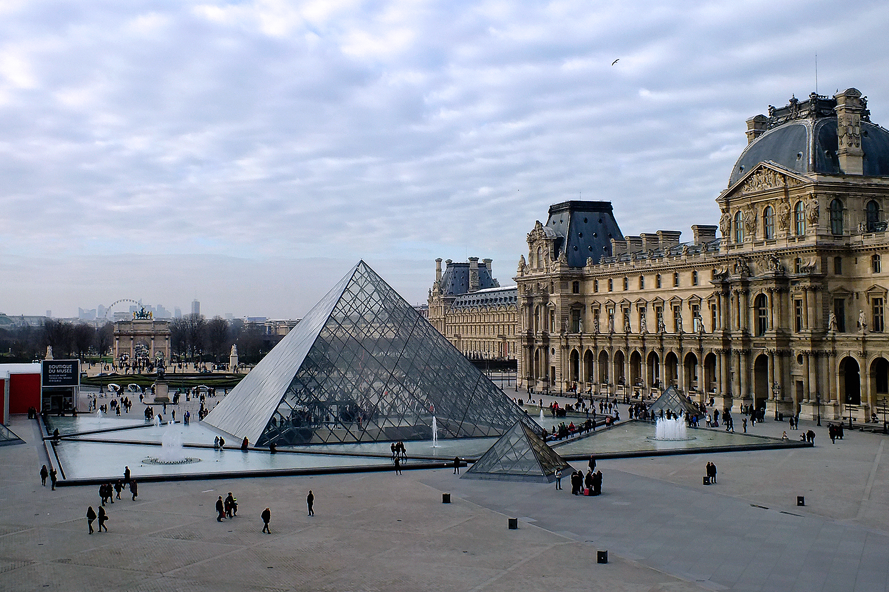
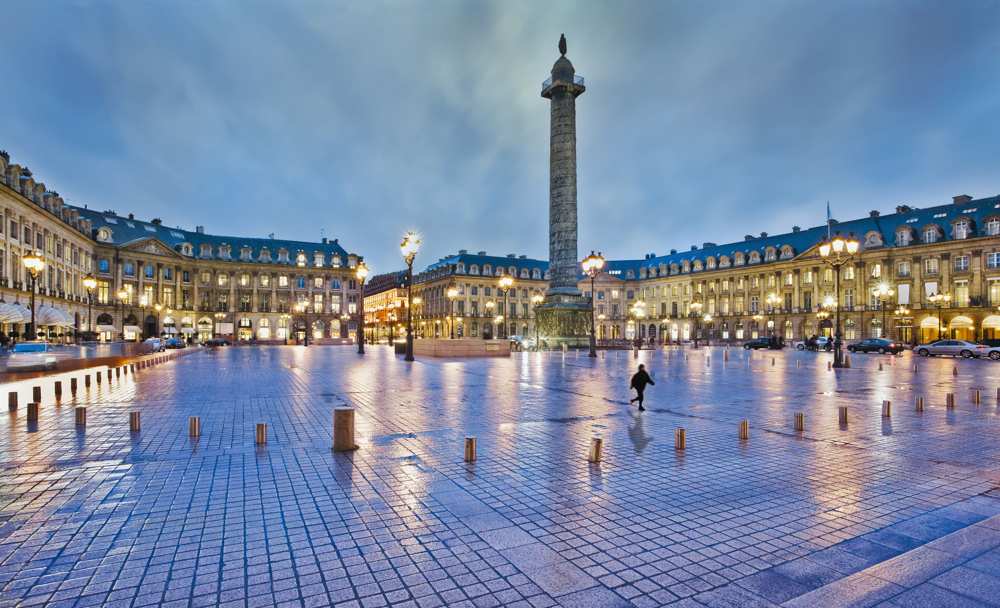
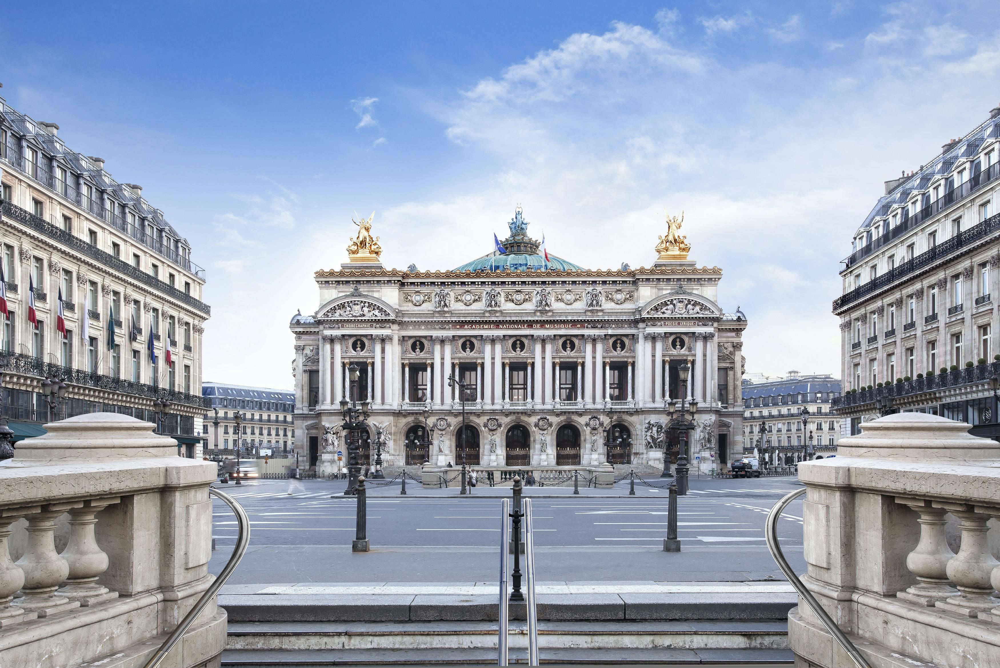
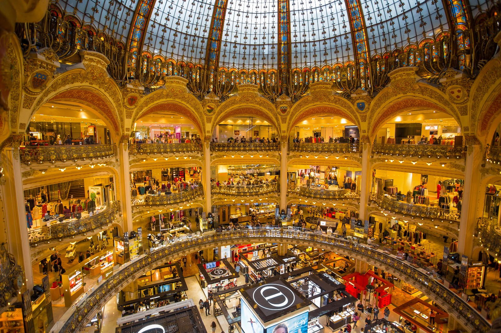
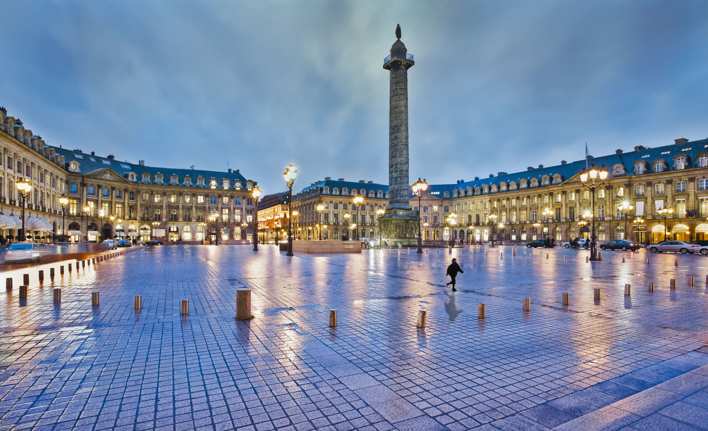
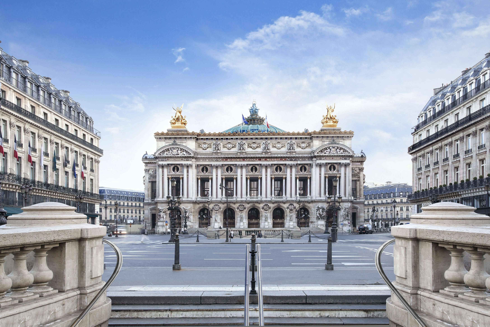
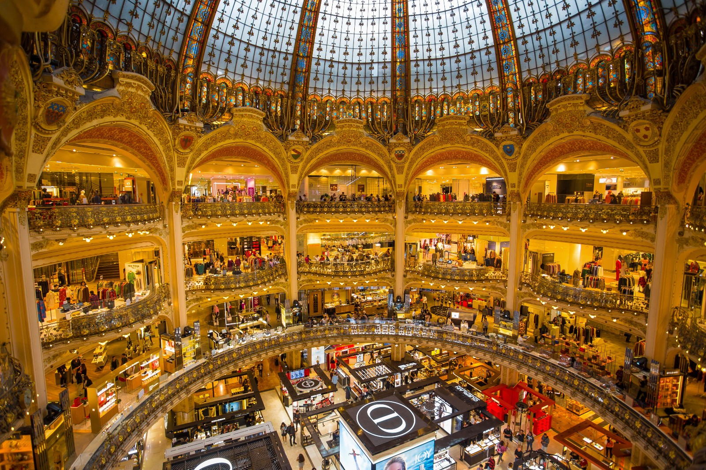

Día 2: Louvre, Jardín de las Tullerías, Plaza de la Concordia, La Madeleine, Plaza Vendôme, Ópera Garnier, Galerías Lafayette, Petit Palais, Arco del Triunfo
Itinerario detallado:
- 🚶 Salimos del hotel hacia el Louvre.
" width="600" height="450" style="border:0;" allowfullscreen="" loading="lazy" referrerpolicy="no-referrer-when-downgrade">
- 🕣 A las 8:30 salimos del hotel. Ver mapa
- Louvre 🎫 Entradas para el Louvre a las 9:30. El mismo día vemos si entramos. 
- 🕥 Al acabar (sobre las 11 o antes si no entramos) vamos al jardín de las Tullerías, Iglesia de la Madeleine, Pl. Vendôme, Ópera Garnier y Galerías Lafayette Haussmann donde comeremos Ver mapa
" width="600" height="450" style="border:0;" allowfullscreen="" loading="lazy" referrerpolicy="no-referrer-when-downgrade">
- 🕒 El paseo será de toda la mañana y llegaremos para comer a las Galerías Lafayette Haussmann donde comeremos.🍖 🥩 🍕
- 🕠 Después de comer y estar un poco al aire acondicionado 🪭❄️ vamos al petite palace a tomar café. Ver mapa
- 🕕 Después del café y estar un poco en el parque, vamos hacia el Arco del Triunfo. Ver mapa
- 🚡 Ahí cenaremos 🍲🍽️, entramos al arco del triunfo y vemos atardecer.
- 🏨 Después de ver el atardecer, volvemos al hotel. Si hay ganas, bajamos en bus a la Torre Eiffel y otro bus al hotel para verla de noche. Ver mapa
{kind=link}

 




